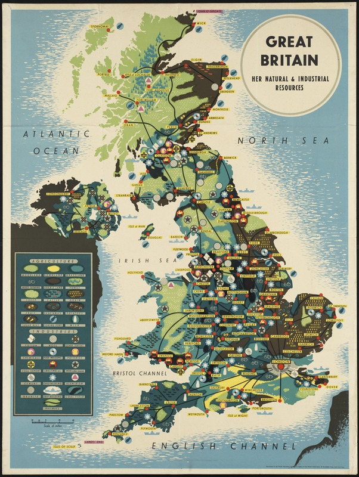
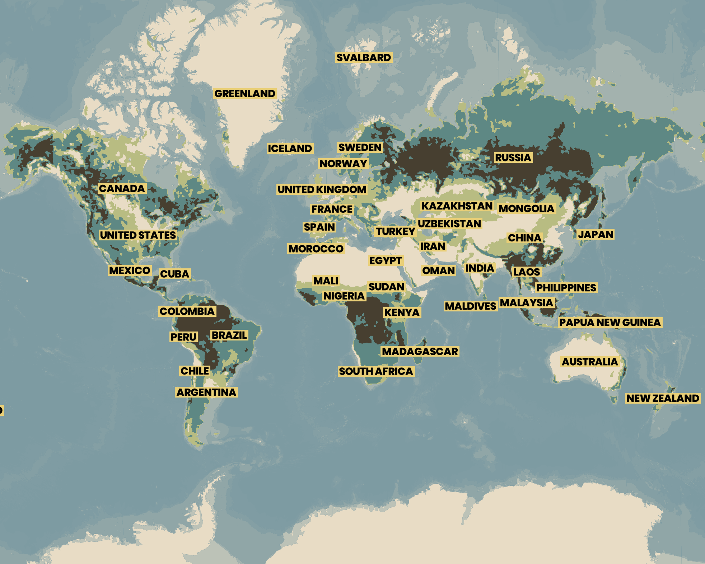
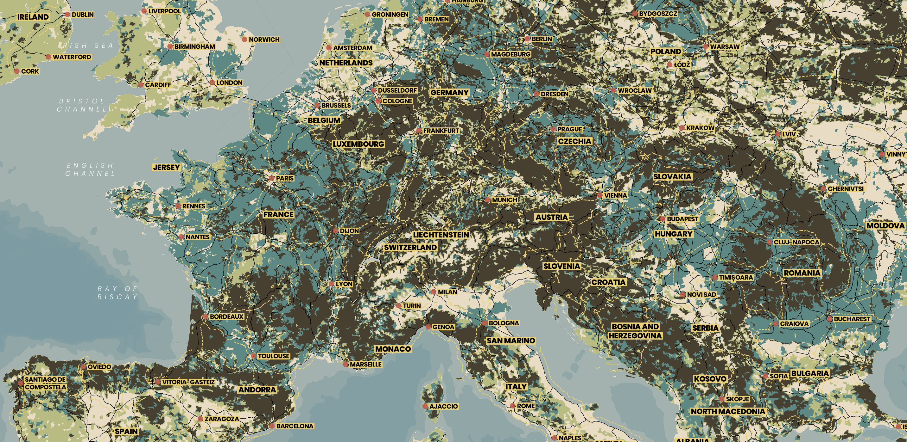
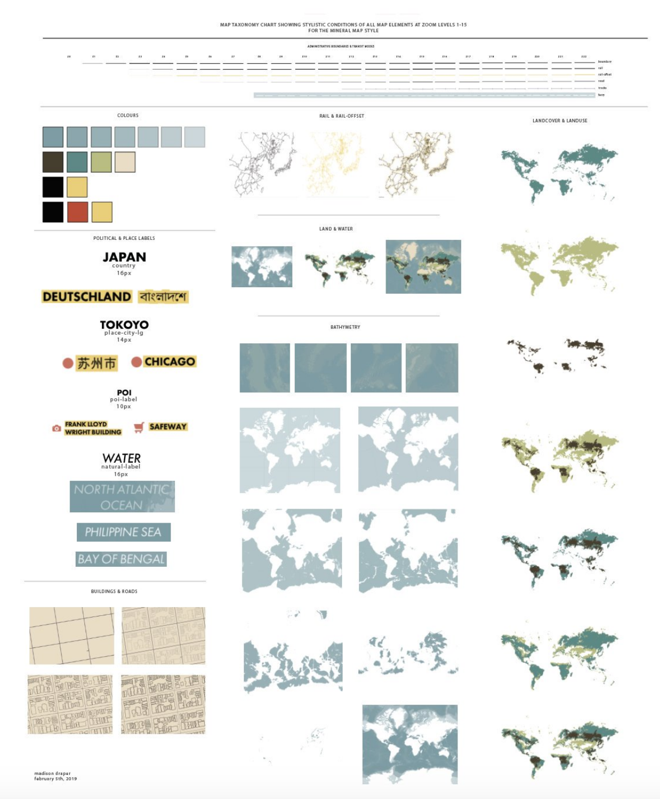

../
Mineral
History & Inspiration
In the 1940's, the British Infornmation Services published the map, Great Britain--Her Natural and Industrial Resources.
This map elegantly juxtaposes the island's landuse with different locations' industries.
The cities then act as nexuses between the different regions, enabling trade and production.
The visual connection allows one to understand the relationship between the agriculture and industry.
How do people modify the landscape to for their needs?

Design Elements
- Lines. Because the original map shows Great Britain, there aren't political adminstriative boundary lines. There are only lines for how the different industries, and therefore, resources are connected. In Mineral, there are no admisntrative boundaries. There are only railroad boundaries, which connect cities, resources and people together for intrastate and interstate affairs.
- Colours. The original map colours the map based off the type of resource available. This map is simplified in a couple ways: (1) the amount of total resource types and (2) the types of resources. Limiting the number of resources types helps communicate the landmass across zoom levels, especially at lower zoom levels. It gives the polygons a greater amount of landmass instead of having several smaller polygons at a low zoom level. This also helps meet a reader's expectation of what the map should look like. Looking at the legend, the data is quite unique. So unique that it might not be easily understood to the readers. Having conceiviable categories is essential for readers to connect with what the map is communicating about the world.
- Text. Mapbox Studio doesn't support
text-background, so the yellow bar behind the text is a bit of a workaround with maxed out text-halo. Because red, nor any other colour with a similar hue, is part of the map, the red circle explicity indicates quickly to readers where locations are without any confusion for cities with different name lengths.



Taxonomy
This taxonomy chart breaks down the map's elements and unmarries them from their geographic context. Here's a great post on taxonpmy charts for more about their purpose. This chart is a bit different though because I keep retain the geographic context, but remove it from the other geographic elements. I believe with all data, especially geographic, context is critical. So I kept some and examined each element individually.
